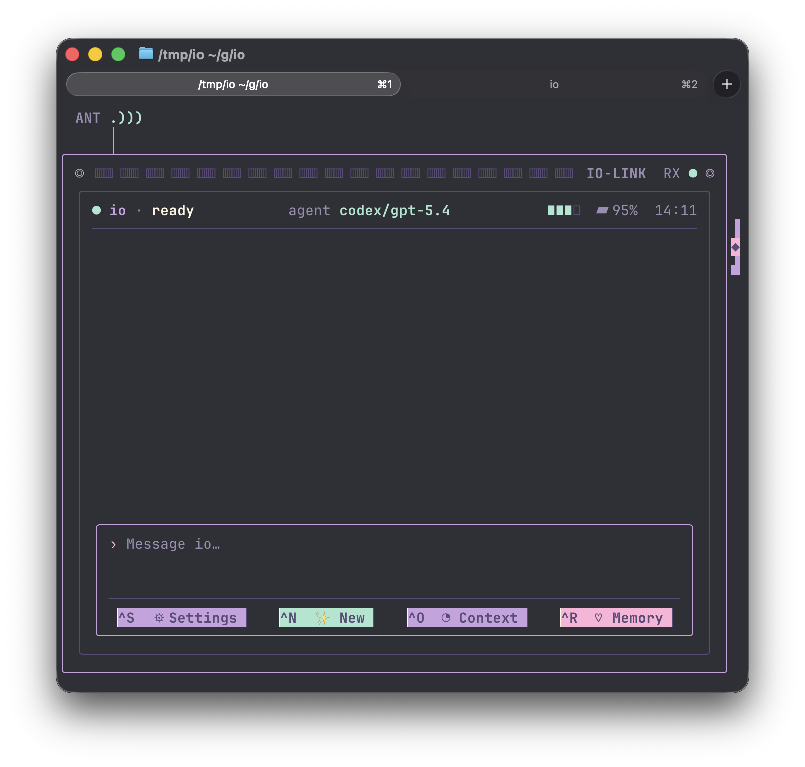

01
Persistent persona
First-run setup writes SOUL.md, then io appends it on launch so the assistant identity survives sessions.
IO-LINK RX: personal terminal online
An in-terminal AI personal assistant with a persistent soul, local memory, agent harness control, and a 16-bit kawaii pocket-communicator glow.

Signal shell
io wraps a long-running assistant persona in a Bubble Tea TUI, stores its own state under ~/.io, and drives installed agent CLIs instead of calling model APIs directly.
Pocket powers
The visual treatment is playful; the architecture is practical. io keeps persona, memory, workers, compaction settings, and harness state in clean local subsystems.
First-run setup writes SOUL.md, then io appends it on launch so the assistant identity survives sessions.
Memory lives in ~/.io/memory, keeping durable notes separate from the project you happen to be working in.
Run through Claude Code or Codex CLI with stored model, effort, session, and resume settings.
Spawn focused workers in target directories and surface their state in a glanceable terminal strip.
Usage and threshold settings stay visible, so compaction can become a managed part of the assistant loop.
A planned background pass reflects on the day, dedups insights, and writes the durable ones back to memory.
Signal flow
io is designed as one friendly TUI over several boringly useful control loops: one chat thread, one assistant identity, and a set of local subsystems that keep the session coherent.
io loads state, selects the configured harness, resumes the saved session when it can, and keeps the single chat surface warm.
The chat view stays compact: pastel bubbles, a compose tray, context usage, and quick controls for settings, memory, and new sessions.
io can launch task-specific agent processes in other directories, track them, and bring the useful result back into the main thread.
The dreamer plan separates compaction from durable insight: summarize live context when needed, then consolidate memories when idle.
Tiny rituals
The avatar swaps between resting, working, happy, and sleepy faces as the session changes state.
Status dots, meters, and scroll signals keep the page feeling like a live terminal instrument.
State, history, and durable memories stay under ~/.io so the assistant can return to the same trail.
Settings, context, memory, and new-chat controls keep the terminal surface compact and tactile.
Mood dial
The TUI already defines calm, blink, happy, working, and sleepy states. Those tiny expressions make status visible without interrupting the chat.
Boot card
io is a Go TUI. Install one supported agent CLI, authenticate it, then start the assistant from this checkout.
# normal assistant
$ go run ./cmd/io
# offline UI demo
$ go run ./cmd/iodemo
# choose a harness/model/effort
$ go run ./cmd/io --harness codex --model gpt-5.4 --effort medium